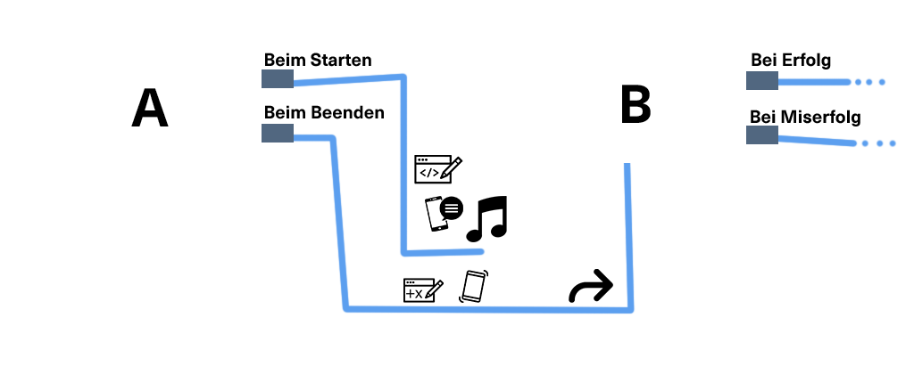

Bevor du dich jetzt aber sofort an die Arbeit an deiner ersten Quest macht, schauen wir uns zunächst an, was eine Quest überhaupt ist.
Die vier großen Stichworte wenn es darum geht eine "geoquest" zu definieren sind "Seiten", "Hotspots", "Trigger" und "Aktionen".
Für alle diese Themen findest du hier eine Seite mit genauen Beschreibungen.
Zunächst geben wir dir mal die Kurzfassung inklusive der Erklärung, wie diese Komponenten zusammenspielen.
Seiten sind im Grunde Ansichten auf deinem Handy. In der Informatik würde man sie als die "Views" bezeichnen.
Hier definierst du, welche Informationen, Texte und Bilder deine App beinhalten soll - generell alles visuelle stellst du hier ein.
Jede Seite hat mindestens zwei mögliche Trigger ("Beim Starten" und "Beim Beenden"). Trigger sind im Grunde Zeitpunkte im Ablauf einer Seite, an denen du Aktionen ausführen kannst.
Zum Beispiel könntest du dir eine "Multiple-Choice-Frage"-Seite vorstellen, die auf deinem Mobilgerät angezeigt wird. "Beim Starten" würde ausgeführt, wenn die Seite gerade frisch angezeigt wird und "Beim Beenden" würde ausgeführt, wenn der Spieler eine Antwort auswählt.
Aktionen sind das was du innerhalb solcher Trigger machst, also z.B. eine Audio-Datei abspielen, das Handy vibrieren lassen oder eine neue Seite anzeigen.Du hast eine Vielzahl von möglichen Aktionen, welche du nach Belieben einsetzen kannst.

Hotspots sind Orte an die der Spieler gehen kann. Diese haben ebenfalls Trigger mit deren Hilfe du Aktionen ausführen kannst, nämlich "Beim Betreten", "Beim Verlassen" und "Beim Antippen".
Sie sind die ganze Zeit im Hintergrund aktiv und reagieren darauf, ob der Spieler sich gerade in der Nähe von Diesen befindet.